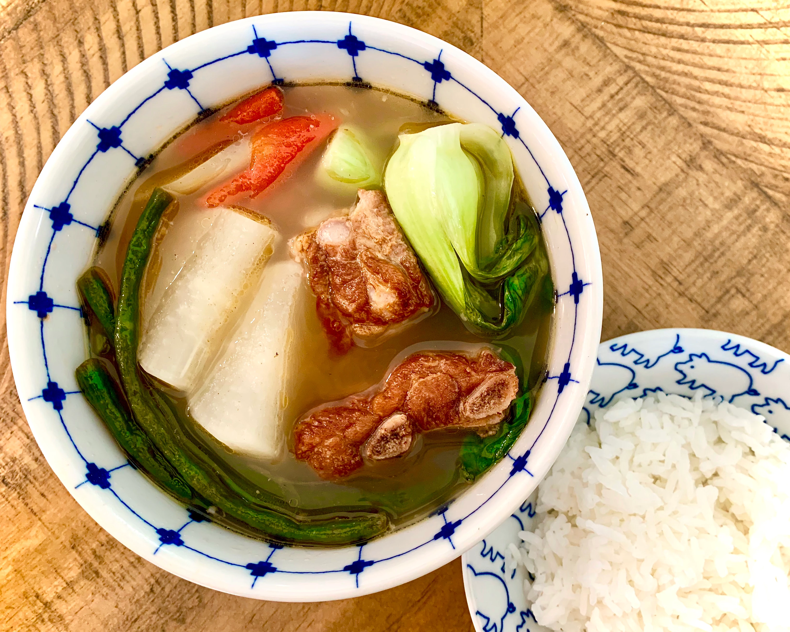

Siningang

Description
Filipino soup cooked with pork. Serve with rice and for additional sauce, use soy or fish sauce. If you want to, you can add what Filipinos call gabi gabi, which is a small taro root. When peeled they look like potatoes. You can add 5 to 6 of them when you add the water and make sure they are cooked through. Take them out when they are cooked because they can get too soft.
Ingredients
- 1 tablespoon vegetable oil
- 1 small onion, chopped
- 1 teaspoon salt
- 1 (1/2 inch) piece fresh ginger, chopped
- 2 plum tomatoes, cut into 1/2-inch dice
- 1 pound bone-in pork chops
- 4 cups water, more if needed
- 1(1.41 ounce) package tamarind soup base(such as Knorr)
- 1/2 pound fresh green beans. trimmed
Directions
- Heat the vegetable oil in a skillet over medium heat. Stir in the onion; cook and stir until the onion has softened and turned translucent, about 5 minutes. Season with salt. Stir in the ginger, tomatoes, and pork chops. Cover and reduce heat to medium-low. Turn the pork occasionally, until browned. Pour in the water and tamarind soup base. Bring to a boil, then reduce heat. Continue simmering until the pork is tender and cooked through, about 30 minutes. Stir in green beans and cook until tender